Blank cells are unevaluated. Red crosses witness penetration; orange question marks are unresolved separation; grey diamonds are numerical/bounds rejections. Colored score cells are complete certified feasible necklaces. Projected ranges do not imply uniform joint coverage.
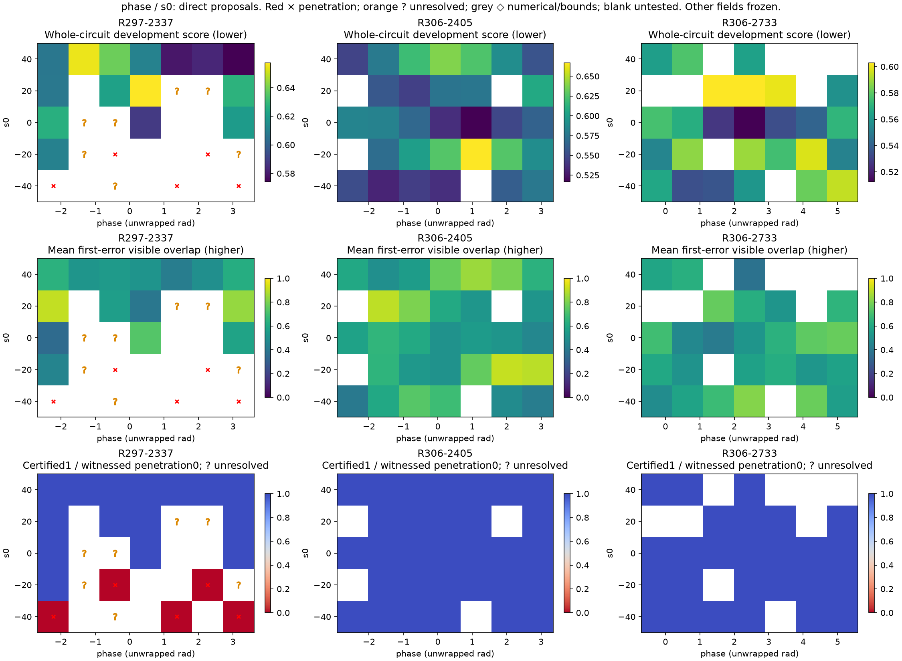
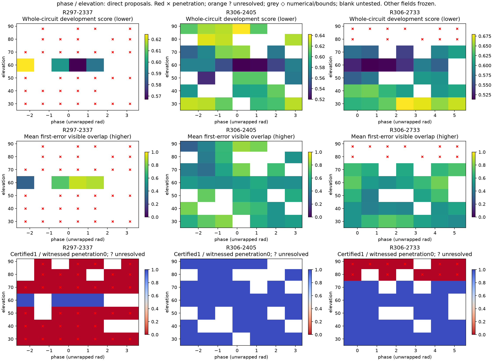
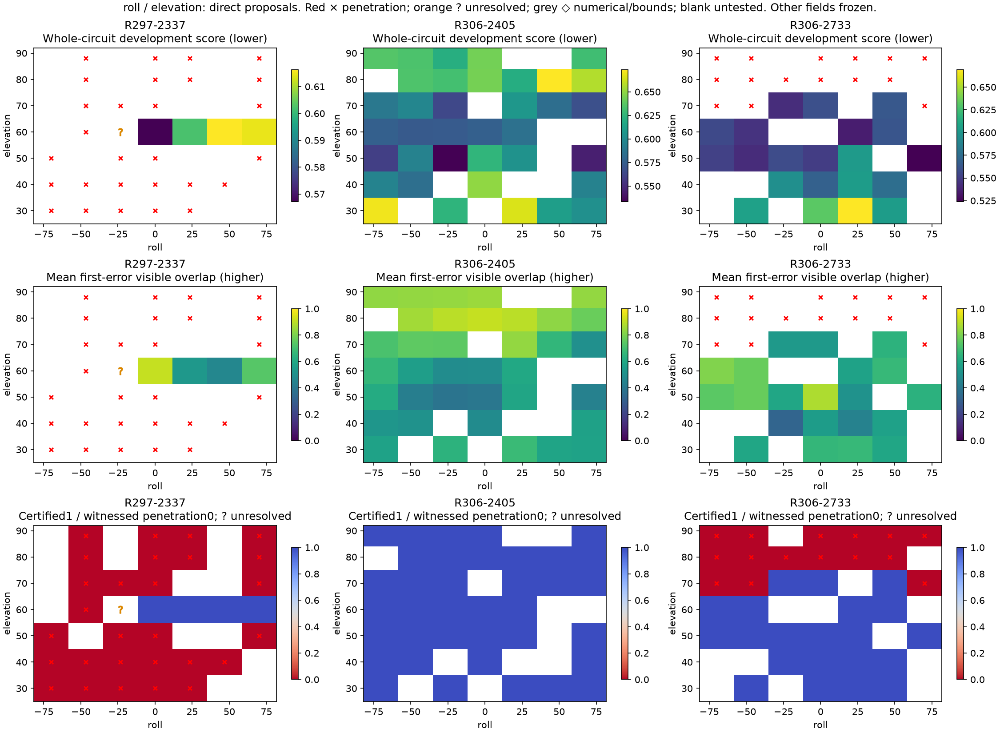
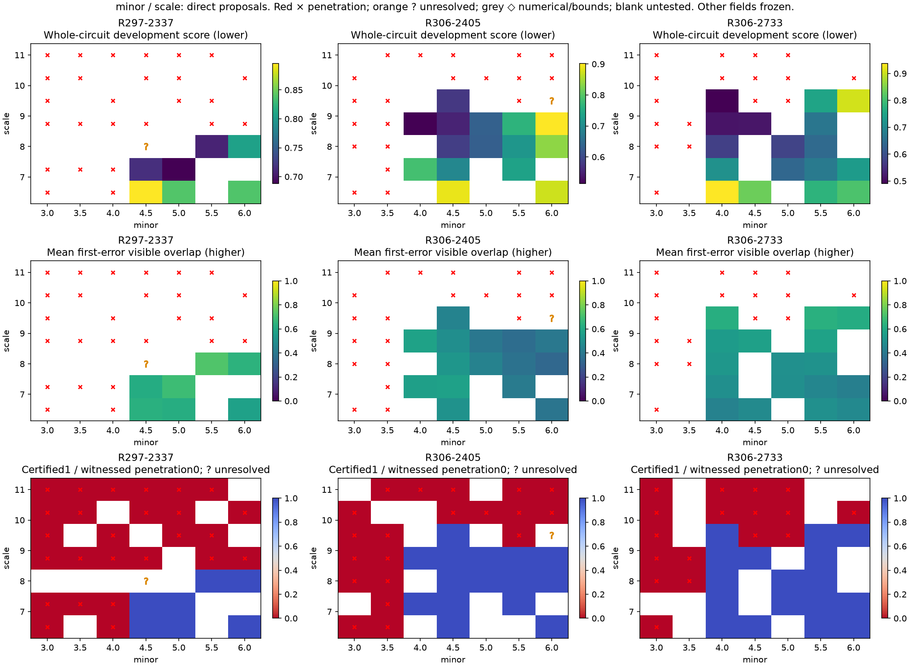
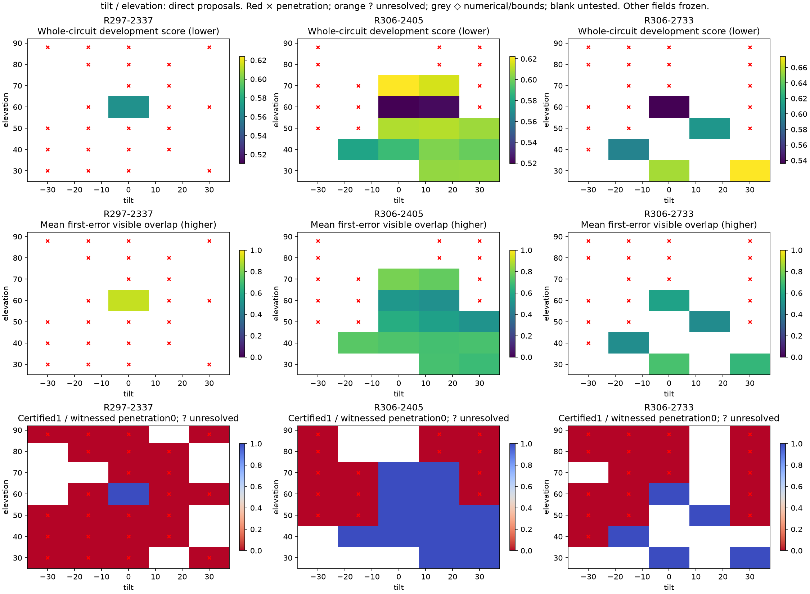
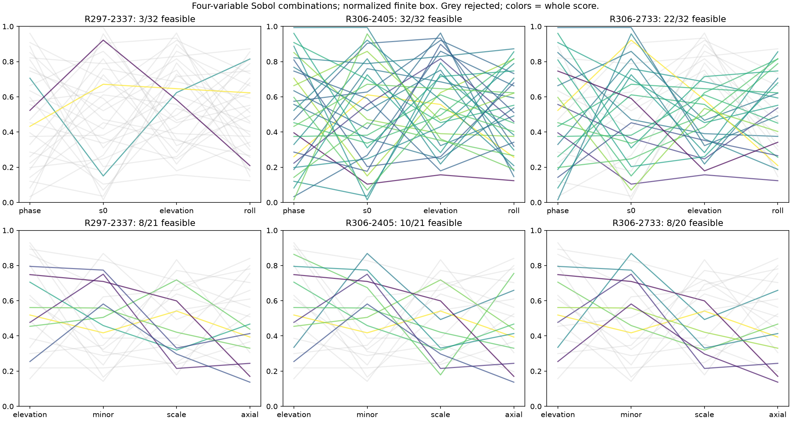
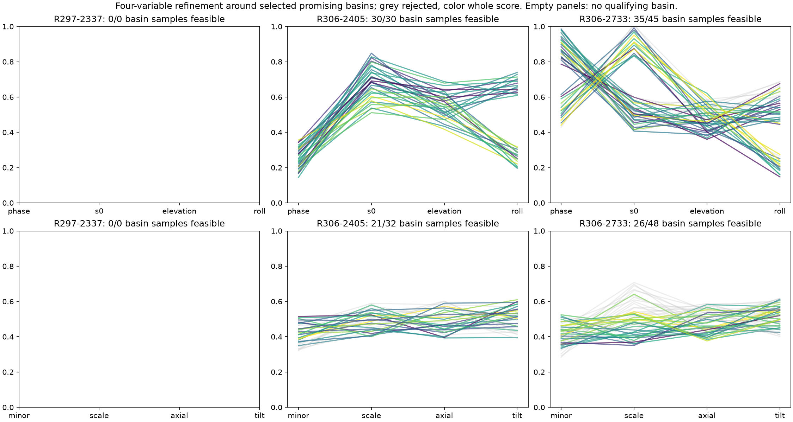
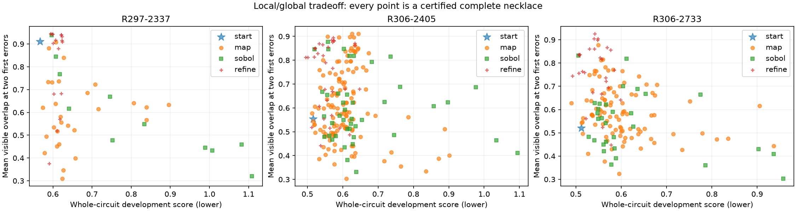
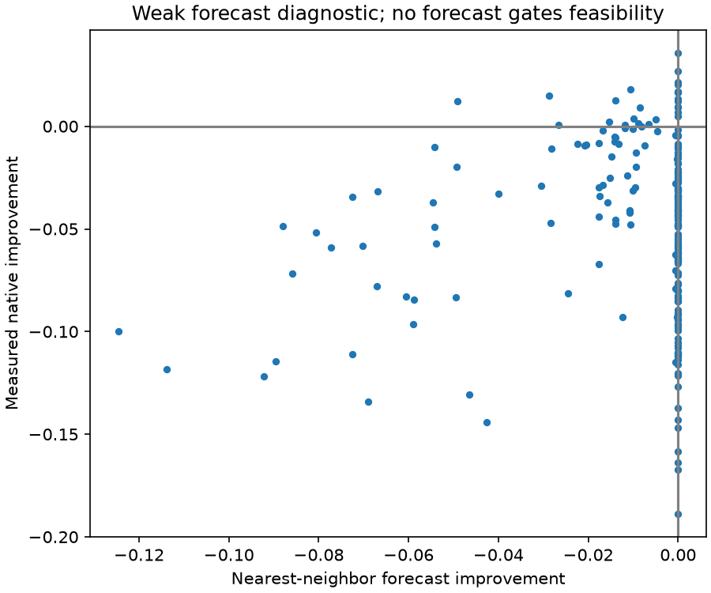
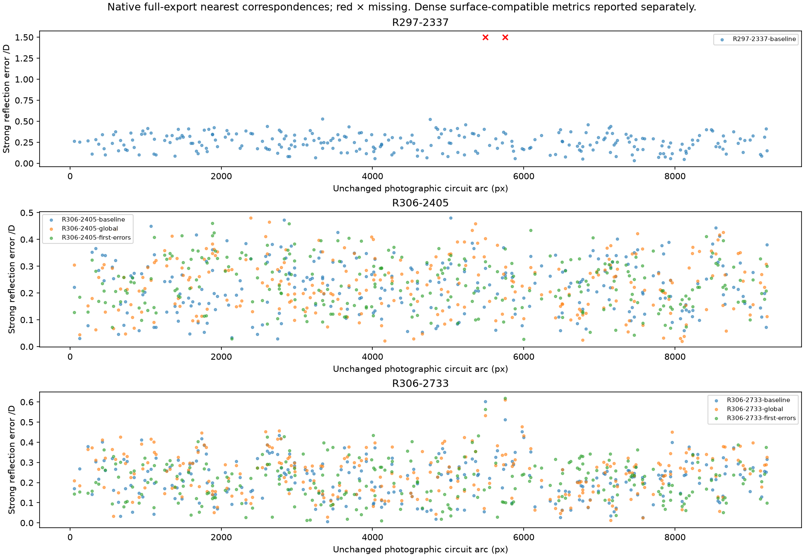
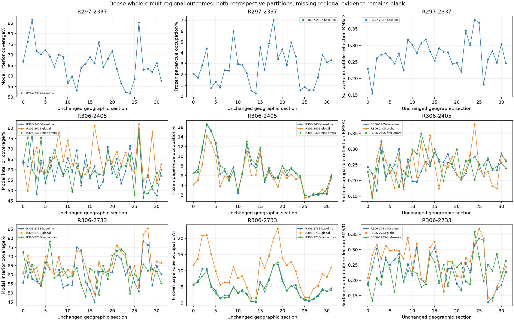
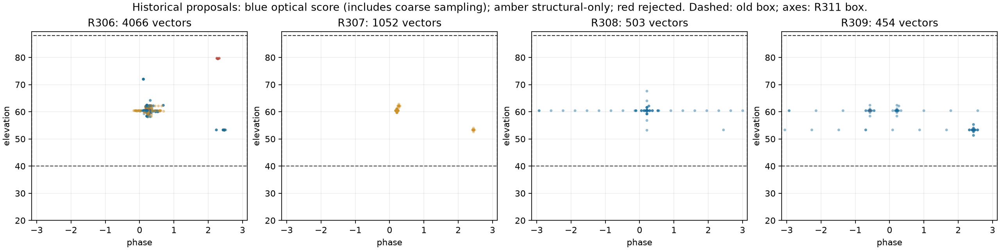
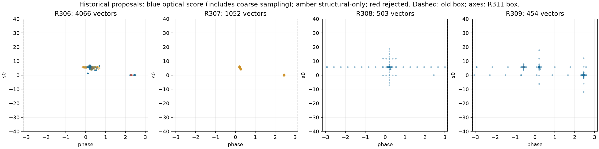
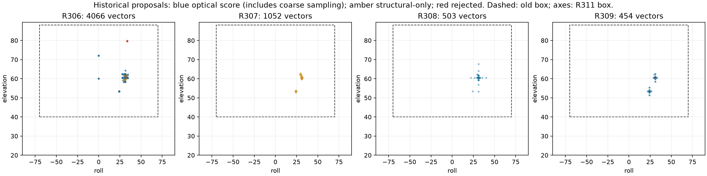
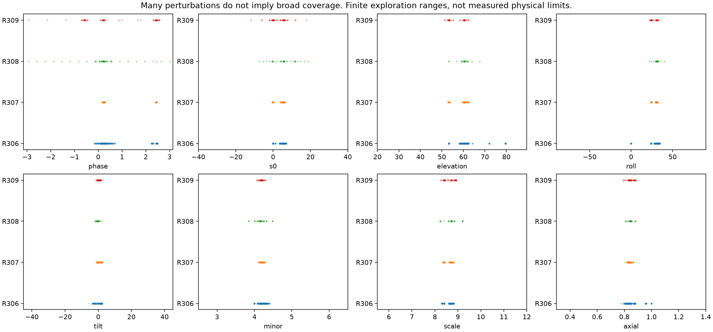
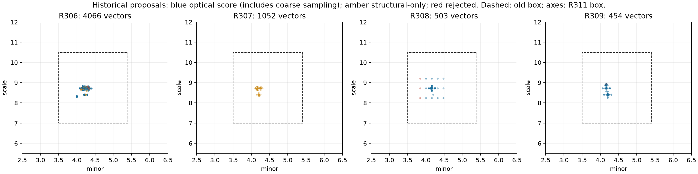